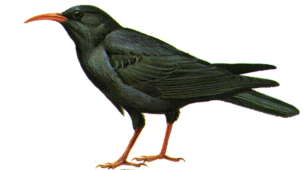

About Skomer
Link to an island map
Skomer is one of three islands lying just west of the Marloes peninsula in south-west Pembrokeshire, the others being Skokholm and Grassholm. Grassholm, the furthest out to sea, is the second largest gannetry in the world. Skomer and Skokholm are often regarded as "twin islands" despite their very different geology and atmospheres. Between them these two islands hold about half of the worlds breeding population of Manx Shearwaters (Puffinus puffinus). They also lie in a marine nature reserve (MNR). Skomer is part of the Pembrokeshire Coast National Park. It is designated an SSSI (Site of Special Scientific Interest), NNR (National Nature Reserve) and SPA (Special Protection Area).

Skomer is also very interesting botanically and entomologically. May is the best time of year to go to see the spectacular carpets of bluebells and red campion on the island: